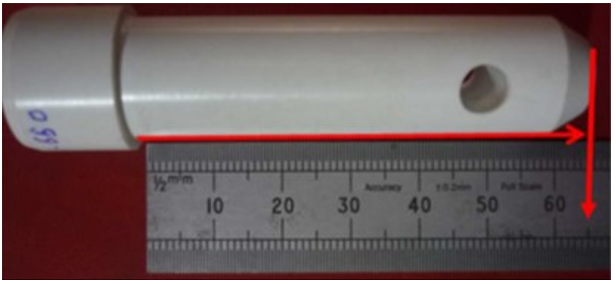
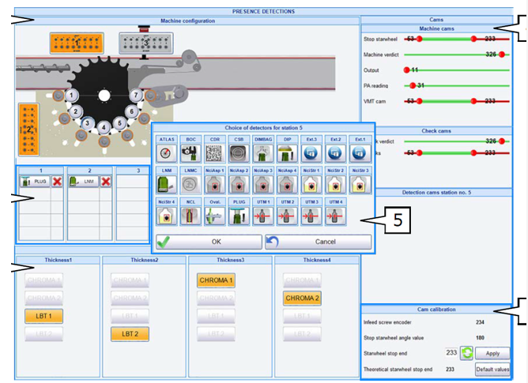
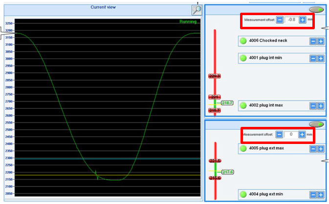
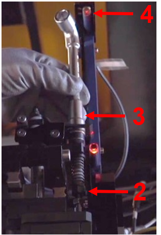

General Setup - Tiama - PLUG V4.5
INS-03-098
Revised: 2021-09-30
Purpose and Application
Purpose
To define a work instruction for proper setup of the PLUG V4.5 inspection device on MX4 Machines.
Application
This work instruction applies to all O-I manufacturing facilities.
Safety
Observe O-I standard safety requirements and procedures defined by the Global Environmental Health & Safety (EH&S) organization, as well as all applicable local, regional, and national requirements. Safety equipment and instructions specific to the completion of this work instruction are detailed in the Instructions Section.
Instructions
-
To set up the PLUG V4.5 inspection, perform the following steps:
-
Check the length of the Plug Caliber against the parameter value
entered.
- Go to the Article menu ,
Handling
 ,
Tooling height.
,
Tooling height.


- Go to the Article menu ,
Handling
-
In Manual mode, bring an article to the station where the PLUG detector is
installed (typically station 1).

-
When the movable frame is in the proper position, there must be 5mm between
the metallic ejector and the bottle.
- If there is not a 5mm gap, first check the height of the bottle entered into the Article parameters.
- If this height is correct, the problem is likely an incorrect calibration of the moving frame.

-
Adjust the PLUG Location Adjust the radial PLUG position.
- Unlock the locking lever [1].
- Move the PLUG head radially to center it with the center of the article’s finish.
- Lock the locking lever [1].

-
Check the verticality of the PLUG when all handles are locked.
- If the verticality is not correct, use the 4 screws around the cylinder block to correct.

-
Sensor Adjustments Adjust the sensitivity at the middle of the sensor
(the metallic plate).

-
Put the internal plug in an upper position. Loosen the screw and raise the
Plug using the toothed rack.

-
External Gauge Adjustment In Manual mode:
- Go to Configuration
,
Detector Presence
 .
. - Select the PLUG symbol under the station where it is installed.
- The value for the Plug wedge must be around 163.


- Go to Configuration
,
Detector Presence
-
Switch the machine to Automatic mode.
- Go to Settings
,
PLUG screen

- In the PLUG Adjustment menu, put all the offsets at 0.


- Go to Settings
,
PLUG screen
-
Take a measured container (example article height = 230mm).
- Run the container into the machine. Observe the sensor response on the Adjustment screen. It must only capture one peak under the curve.
- If the difference between the measured and real height is more than 1mm, modify the Plug wedge (Step 12).
- If the difference is less than 1mm, use the Offset measure to correct the measurement.

-
Adjust the height threshold values.
- The external peak indicates the moment when the external caliber makes contact with the container.

-
Run the container with the known measured value in the MX4 and observe the
signal capture.
- If the internal measurement is less than 1mm difference, correct it using the OFFSET value (0.5 maximum value recommended).

-
If the difference between the measured and real height is more than
1mm:
- In Manual mode: slowly move down the external caliber until the optical barrier is activated (LED [1] will turn off).
- Unlock the nut [2] located on the internal axes.
- Untighten or loosen the nut [3] to have more or less compression on the internal caliber.
- Find the correct position to turn off the LED [4] of the optical internal barrier.
- Lock the system using the nut [2].
- Verify the new measured value.


-
Check the length of the Plug Caliber against the parameter value
entered.
Required Training
Before performing this work instruction, applicable personnel must be trained by an authorized trainer on the required training contents listed in this document.
Equipment
Allen wrench set
Wrench set
Screwdriver set
References
Document Classification
- Efficiency and Throughput
- Quality
Fundamentals
- INS-306
Approval
|
Region |
Representative |
|---|---|
|
Europe |
Robert Kurpiel, Bruno Laumier, Stefano Lucidi, Hans de Willigen |
|
Latin America |
Juan Franco |
|
Mexico |
Yigael Hernandez |
|
North America |
David Gladwin |
|
Global Operations |
Bob Morin |
Revision History
| 2021-09-30 |
Approved by Bob Morin, Global Inspection Network Leader |
|
Original Issue |